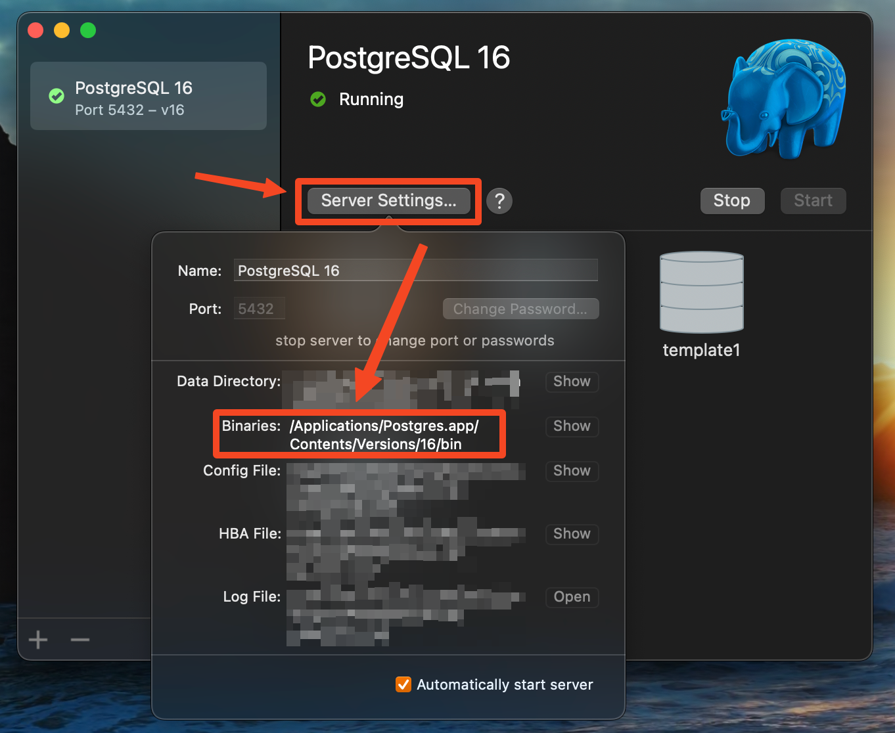
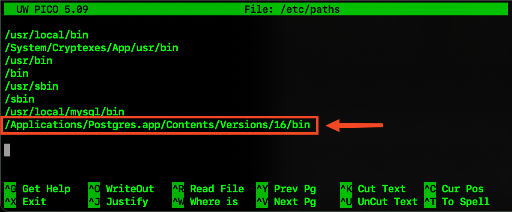

After installing PostgreSQL, you will need to complete the below steps so that the psql command will work in Terminal.
These steps will add the PostgreSQL binaries path to the paths file on your computer:
Open Terminal and type sudonano/etc/paths, then press Enter to open the paths file.
Note
You will be prompted to enter a password to edit the paths file.
Open the PostgreSQL app and make sure the server is runnning by clicking Start.
Click on Server Settings and copy the binaries path.

Paste the binaries path in the paths file in Terminal.

Press Control+O, then Enter to save the contents to the paths file.
Lastly, press Control+X to exit the paths file.
Upon relaunching Terminal, you should find that you can now utilize the psql command.
Caution
If you do not complete the above steps, then you will get psql:commandnotfound when trying to execute the psql command in Terminal.
Note
The below setup is for the local implementation only. If you’re not using the local setup, please skip to Clone GitHub Repo.
We need to set a password for the local database connection which will be used later to connect dbt.
Enter the below in Terminal to launch the PostgreSQL commandline:
psql-Upostgres
To set the password, enter \passwordpostgres. You’ll be prompted to create a password.
Navigate to the cloud or local storage directory in Terminal after you have cloned the GitHub repository:
cdportfolio-optimization/cloud-storage# directory for cloud setupcdportfolio-optimization/local-storage# directory for local setup
Note
You only need to choose one directory. The local directory is more simple, but the cloud directory requires more setup.
To configure the cloud setup, you’ll be required to establish three components within Amazon Web Services (AWS).
Switch to dbt project folder and initialize the project:
cdportfolio_optimization_project_dbt&&dbtinit
You will be prompted to select a database by entering a number. Enter the number for the Postgres data base and
press enter. This will the create the profiles.yml file to add your database credentials.
Open a separate Terminal window. Copy and paste the below:
cd~# switch to root directorycd.dbt# switch to .dbt folder
nanoprofiles.yml# open yml file for editing
Edit the profiles.yml file to look like the below:
The brackets will need to be removed for each input and the password would need to be in single quotes.
host: If you are configuring this locally, then assign this value to localhost. If you’re using the cloud setup then you will need to enter the AWS RDS endpoint you created.
dev_username: If you are configuring this locally, then assign this value to postgres. If you’re using the cloud setup then you will need to enter the AWS RDS username you created.
dev_password: If you are configuring this locally, then assign this value to the password you created in the PostgreSQL Setup. If you’re using the cloud setup, then you will need to enter the AWS RDS username you created.
To save the profiles.yml content:
Press Control+O, then Enter to write to the profiles.yml file.
Lastly, press Control+X to exit the profiles.yml file.
Close this Terminal
Go back to the initial Terminal and test the database connection:
dbtdebug
If done correctly, the output will say “All checks passed!”. If not, you will need to verify the profiles.yml file has the correct info.
You will lastly need to modify the .zshrc configuration file to add your database credentials and API informmation for. If you haven’t already you will need to sign up for this in order to get an API key.
To modify the .zshrc file, open a separate Terminal and execute the below:
For local setup, add the below to the .zshrc file:
# Local (PostgreSQL) credentialsexportLOCAL_HOST="localhost"exportLOCAL_PORT="5432"exportLOCAL_USER="postgres"exportLOCAL_DBNAME="company_stock"exportLOCAL_PASS=[PASSWORD]# Financial Marketing Prep (FMP) API URL and keyexportFMP_API_URL="https://financialmodelingprep.com/api/v3/profile/"exportFMP_API_KEY=[APIKEY]
You will need to add your credentials to the inputs in the brackets.
Press Control+O, then Enter to write to the .zshrc file.